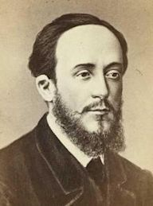
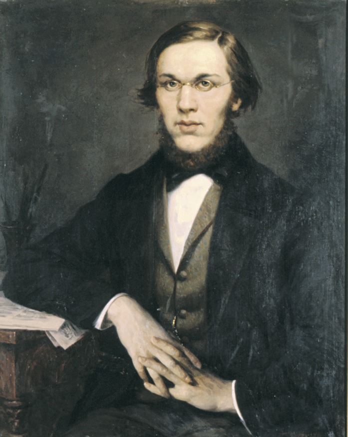
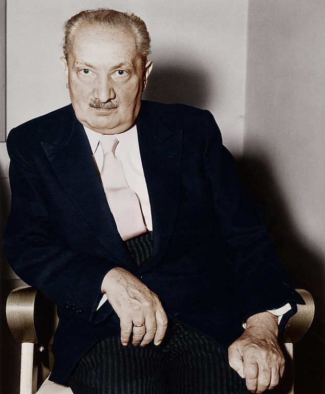
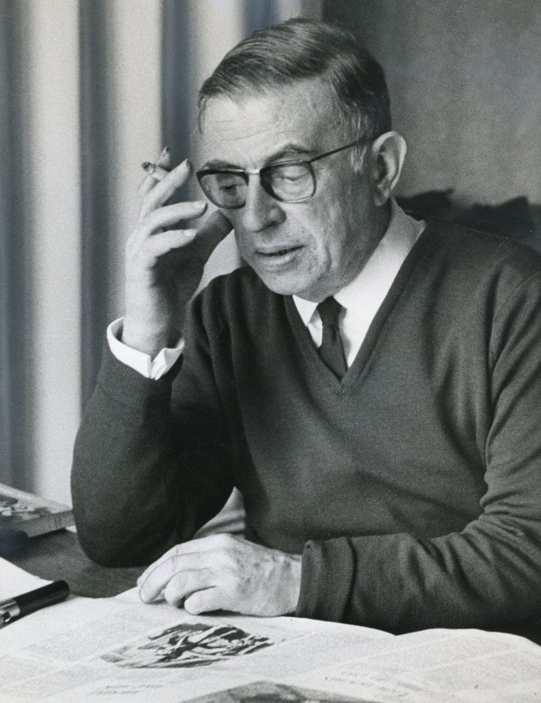

.jpeg) Friedrich Nietzsches
Friedrich Nietzsches
.jpeg)
The term nihilism comes from the Latin word ‘nihil’ which literally means “nothing.” Many believe that it was originally coined by Russian novelist Ivan Turgenev in his novel Fathers and Sons (1862) but it probably first appeared several decades earlier. Nevertheless, Turgenev’s use of the word to describe the views he attributed to young intellectual critics of feudal society generally and the Tsarist regime, in particular, gave the word its widespread popularity.The basic principles which underlie nihilism existed long before there was a term that attempted to describe them as a coherent whole. Most of the basic principles can be found in the development of ancient skepticism among the ancient Greeks. Perhaps the original nihilist was Gorgias (483 to 378 BCE) who is famous for having said: “Nothing exists. If anything did exist it could not be known. If it was known, the knowledge of it would be incommunicable.”
TopMany of the most common responses to the basic premises of nihilism come down to despair: despair over the loss of God, despair over the loss of objective and absolute values, and/or despair over the postmodern condition of alienation and dehumanization. That does not, however, exhaust all of the possible responses — just as with early Russian Nihilism, there are those who embrace this perspective and rely upon it as a means for further development.
Dmitri Pisarev

Nikolai Dobrolyubov

Nikolai Chernyshevski
Friedrich Nietzsches
As an intellectual movement that exploded on the scene in mid-twentieth-century France, “existentialism” is often viewed as a historically situated event that emerged against the backdrop of the Second World War, the Nazi death camps, and the atomic bombings of Hiroshima and Nagasaki, all of which created the circumstances for what has been called “the existentialist moment” (Baert 2015), where an entire generation was forced to confront the human condition and the anxiety-provoking givens of death, freedom, and meaninglessness. Although the most popular voices of this movement were French, most notably Jean-Paul Sartre and Simone de Beauvoir, as well as compatriots such as Albert Camus, Gabriel Marcel, and Maurice Merleau-Ponty, the conceptual groundwork of the movement was laid much earlier in the nineteenth century by pioneers like Søren Kierkegaard and Friedrich Nietzsche and twentieth-century German philosophers like Edmund Husserl, Martin Heidegger, and Karl Jaspers as well as prominent Spanish intellectuals José Ortega y Gasset and Miguel de Unamuno.
TopExistentialism is a form of philosophical inquiry that explores the issue of human existence. Existentialist philosophers explore questions related to the meaning, purpose, and value of human existence. Common concepts in existentialist thought include existential crisis, dread, and anxiety in the face of an absurd world and free will, as well as authenticity, courage, and virtue.
Friedrich Nietzsche
Martin Heidegger

Jean-Paul Sartre

Given the anti-religious tendencies of absurdism, it’s surprising to learn that it originated in the work of the Christian philosopher Søren Kierkegaard. Kierkegaard was a Christian, but he didn’t ignore the criticisms of religion that he heard around him. Instead, he listened to those critiques and became convinced that there could be no rational basis for believing in God. In fact, he found these critiques so persuasive that he ultimately concluded that there was no rational basis for believing in any kind of hopeful or consoling story about the purpose of existence. That is, he became an absurdist.
TopAbsurdism is a philosophical perspective which holds that the efforts of humanity to find meaning or rational explanation in the universe ultimately fail (and, hence, are absurd) because no such meaning exists, at least to human beings. The word absurd in this context does not mean "logically impossible," but rather "humanly impossible."Absurdism implies a tragic tone and feelings of frustration that arise out of the contradiction between the human quest for the meaning of life and its inaccessibility.
Albert Camus